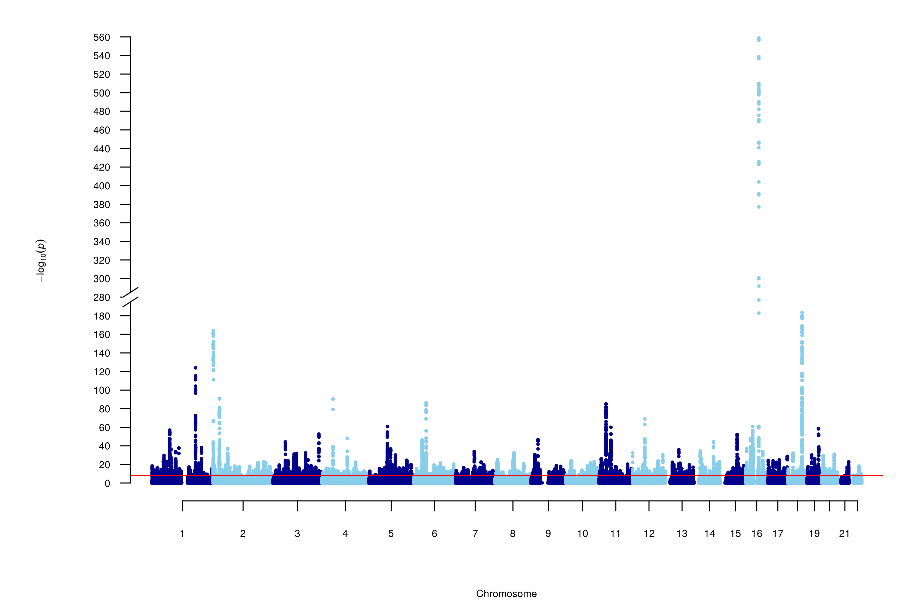

BMI

We work on the GIANT+Biiobank data on BMI (Yengo et al. 2018), including both the genomewide
wget https://portals.broadinstitute.org/collaboration/giant/images/0/0f/Meta-analysis_Locke_et_al+UKBiobank_2018.txt.gzVisualisation
The first thing is to see the Manhattan plot; in this case the P values could be extremely small and we resort to a truncated version.
options(width=120)
gz <- gzfile("Meta-analysis_Locke_et_al+UKBiobank_2018_UPDATED.txt.gz")
BMI <- within(read.delim(gz,as.is=TRUE), {Z <- BETA/SE})
print(subset(BMI[c("CHR","POS","SNP","P")],CHR!=16 & P<=1e-150))
library(Rmpfr)
print(within(subset(BMI, P==0, select=c(CHR,POS,SNP,Z)),
{P <- format(2*pnorm(mpfr(abs(Z),100),lower.tail=FALSE)); Pvalue <- pvalue(Z); log10P <- -log10p(Z)}))
png("BMI.png", res=300, units="in", width=9, height=6)
par(oma=c(0,0,0,0), mar=c(5,6.5,1,1))
mhtplot.trunc(BMI, chr="CHR", bp="POS", z="Z", snp="SNP",
suggestiveline=FALSE, genomewideline=-log10(1e-8),
cex.mtext=1.2, cex.text=1.2,
annotatelog10P=156, annotateTop = FALSE, highlight=c("rs13021737","rs17817449","rs6567160"),
mtext.line=3, y.brk1=200, y.brk2=280, cex.axis=1.2, cex.y=1.2, cex=0.5,
y.ax.space=20,
col = c("blue4", "skyblue")
)
dev.off()pvalue() and R/Rmpfr both give the minimum approximately 1.26e-479. Nevertheless, it is safer
to generate -log10(P) on the fly -- in the plot chromosome.16 stands out which would not be so should we restrict ourselves only
to nonzero P values. We went further to highlight three SNPs.
{kind=link}
Independent signals
(
zcat Meta-analysis_Locke_et_al+UKBiobank_2018_UPDATED.txt.gz | \
head -1
zcat Meta-analysis_Locke_et_al+UKBiobank_2018_UPDATED.txt.gz | \
awk '(NR>1 && $9<=1e-8)' | \
sort -k1,1n -k2,2n
) > BMI.dat
module load gcc/5.2.0
R --no-save -q < BMI.R > BMI.outmodule command prepares for appropriate version of R to be enabled and BMI.R selects independent signals as follows,
options(echo=FALSE)
BMI <- read.delim("BMI.dat",as.is=TRUE)[c("CHR","POS","SNP","BETA","SE","P")]
require(reshape)
BMI <- rename(BMI,c(CHR="Chrom",POS="End",SNP="MarkerName",BETA="Effect",SE="StdErr",P="P.value"))
require(gap)
chrs <- with(BMI,unique(Chrom))
for(chr in chrs)
{
print(chr)
ps <- subset(BMI[c("Chrom","End","MarkerName","Effect","StdErr")],Chrom==chr)
row.names(ps) <- 1:nrow(ps)
sentinels(ps,chr,1)
}(
zcat Meta-analysis_Locke_et_al+UKBiobank_2018_UPDATED.txt.gz | \
head -1
zcat Meta-analysis_Locke_et_al+UKBiobank_2018_UPDATED.txt.gz | \
awk '
function abs(x)
{
if (x<0) return -x;
else return x;
}
(NR>1 && abs($7/$8) >= 5.730729)' | \
sort -k1,1n -k2,2n
) > BMI.dat
R --no-save -q < BMI.R > BMI.outqnorm(1-0.5e-8) from R.
Annotation
As a follow-up to the earlier GIANT analysis, we have in the directory results from PhenoScanner for the 97 SNPs described in the SUMSTATS repository
module load phenoscanner/phenoscanner_v2
phenoscanner -c All -l No -p 0.00001 -i 97.snps -o 97awk 'NR>1' BMI.dat | \
cut -f3 > BMI.rsid
phenoscanner -c All -l No -p 0.00001 -i BMI.rsid -o BMIPathway analysis
gunzip -c Meta-analysis_Locke_et_al+UKBiobank_2018.txt.gz | awk '
{
FS=OFS="\t"
if(NR==1) print "SNP","Chr","Pos","P"
else if($9<=5e-8) print $3,$1,$2,$9
}' | gzip -f > BMI.txt.gz
As usual, we make a call to BMI.cfg via
depict.py BMI.cfgDEPICT_v1_rel194.tar.gz version is used. Once started, there was complaint that
Retrieving background loci
Exiting.. To few background files in data/backgrounds/nloci723_nperm500_kb500_rsq0.1_mhc25000000-35000000_colld0.5-collection-1000genomespilot-depict-150429/. Please remove the folder, rerun DEPICT and contact tunepers@broadinstitute.org if the error prevails.depict.pythere.
We then generate BMI.xlsx as in PW-pipelne. While there are 859 genesets with FDR<0.05, tissue enrichment shows compelingly an overwhelming role of the nervous system.
This is detailed from PW-pipeline/wiki for the analysis.
Partitioned heritabilty
Information for the documentation example is available from software-notes. Here we carry on with the .gz file above.
gunzip -c Meta-analysis_Locke_et_al+UKBiobank_2018.txt.gz > ldsc.txt
python munge_sumstats.py --sumstats ldsc.txt --a1 Tested_Allele --a2 Other_allele --merge-alleles w_hm3.snplist --out ldsc --a1-incpython ldsc.py --h2 ldsc.sumstats.gz\
--ref-ld-chr baseline_v1.1/baseline.\
--w-ld-chr 1000G_Phase3_weights_hm3_no_MHC/weights.hm3_noMHC.\
--overlap-annot\
--frqfile-chr 1000G_Phase3_frq/1000G.EUR.QC.\
--out ldsc_baselinepython ldsc.py --h2 ldsc.sumstats.gz\
--w-ld-chr 1000G_Phase3_weights_hm3_no_MHC/weights.hm3_noMHC.\
--ref-ld-chr 1000G_Phase3_cell_type_groups/cell_type_group.3.,baseline_v1.1/baseline.\
--overlap-annot\
--frqfile-chr 1000G_Phase3_frq/1000G.EUR.QC.\
--out ldsc_CNS\
--print-coefficientsMendelian Randomisation
A documented example on BMI-lung cancer is adapted in software-notes but our focus here is on BMI-T2D from DIAGRAM,
wget -qO- https://portals.broadinstitute.org/collaboration/giant/images/e/e2/Meta-analysis_Locke_et_al+UKBiobank_2018_top_941_from_COJO_analysis_UPDATED.txt.gz > BMI-COJO.gz
R --no-save -q < MR.R > MR.logTWAS
We start with MetaXcan as follows,
cd /home/jhz22/D/genetics/hakyimlab/MetaXcan/software
./MetaXcan.py \
--model_db_path /home/jhz22/D/genetics/hakyimlab/PredictDB/GTEx-V7_HapMap-2017-11-29/gtex_v7_Brain_Amygdala_imputed_europeans_tw_0.5_signif.db \
--covariance /home/jhz22/D/genetics/hakyimlab/PredictDB/GTEx-V7_HapMap-2017-11-29/gtex_v7_Brain_Amygdala_imputed_eur_covariances.txt.gz \
--gwas_file ldsc.txt \
--snp_column SNP \
--effect_allele_column Tested_Allele \
--non_effect_allele_column Other_Allele \
--beta_column BETA \
--pvalue_column P \
--output_file MX.csvldsc.txt created above directly with results contained in MX.csv and screen output MX.log.
We would also be tempting to contrast results with FUSION,
gunzip -c Meta-analysis_Locke_et_al+UKBiobank_2018.txt.gz | awk '
{
FS=OFS="\t"
if(NR==1) print "SNP","A1","A2","Z"
else print $3,$4,$5,$7/$8
}' > fusion.txt
for chr in $(seq 22)
do
Rscript FUSION.assoc_test.R --sumstats fusion.txt \
--weight1s WEIGHTS/NTR.BLOOD.RNAARR.pos --weights_dir WEIGHTS/ \
--ref_ld_chr LDREF/1000G.EUR. --chr $chr --out fusion.$chr.dat
doneTwo additional aspects are useful to explore:
Fine-mapping
In line with the fact that both TWAS and GWAS z scores are available, the option --caviar natually put them as input files for CARIAR,
for chr in $(seq 22)
do
Rscript FUSION.assoc_test.R \
--sumstats fusion.txt \
--weights /home/jhz22/D/mrc/genetics/FUSION/GE/CMC.BRAIN.RNASEQ.pos \
--weights_dir /home/jhz22/D/mrc/genetics/FUSION/GE/ \
--ref_ld_chr /home/jhz22/D/genetics/fusion_twas/LDREF/1000G.EUR. \
--chr $chr \
--caviar \
--out caviar
doneColocalisation
This is furnished with --coloc_P --GWASN,
for chr in $(seq 22)
do
Rscript FUSION.assoc_test.R \
--sumstats fusion.txt \
--weights /home/jhz22/D/mrc/genetics/FUSION/GE/CMC.BRAIN.RNASEQ.pos \
--weights_dir /home/jhz22/D/mrc/genetics/FUSION/GE/ \
--ref_ld_chr /home/jhz22/D/genetics/fusion_twas/LDREF/1000G.EUR. \
--chr $chr \
--coloc_P 5e-8 \
--GWASN 70000 \
--out coloc$chr.dat
donePrediction
See software-notes on the use of utils/make_score.R, which is based on the best model.
Approximately independent LD blocks
We can use these blocks genomewide or a specific gene, e.g., MC4R,
awk 'NR>1' ldsc.txt | sort -k1,1n -k2,2n | awk '
{
OFS="\t"
if (NR==1) print "#chrom", "Start", "End", "SNP", "A1", "A2", "FreqA1", "BETA", "SE", "P", "N"
print "chr" $1, $2-1, $2, $3, $4, $5, $6, $7, $8, $9, $10
}' > BMI.bed
# EUR.bed is now with FM-pipeline
intersectBed -a BMI.bed -b EUR.bed -loj | cut -f12-14 --complement > BMI.txt
cut -f4,10 BMI.txt > BMI.snpandp
# gene-based association
vegas2v2 -G -snpandp BMI.snpandp -custom $PWD/g1000p3_EUR -glist glist-hg19 -out genes
# pathway-based association
awk '(NR>1){OFS="\t";gsub(/"/,"",$0);print $2,$8}' genes.out > BMI.geneandp
vegas2v2 -P -geneandp BMI.geneandp -glist glist-hg19 -geneandpath biosystems20160324.vegas2pathSYM -out pathways
# grep MC4R glist-hg19 --> 18 58038563 58040001 MC4R
# 1439 bp
# EUR.bed -- > 1563 chr18 57630483 59020751 region1563
# 1390268 bp
awk /region1563/ BMI.txt > MC4R.txt
# wc -l MC4R.txt
# 1342 SNPs
cut -f4,10 MC4R.txt > MC4R.snpandp
echo MC4R > MC4R.genelist
vegas2v2 -G -snpandp MC4R.snpandp -custom $PWD/g1000p3_EUR -glist glist-hg19 -genelist MC4R.genelist -out MC4RColocalisation analysis
This can be explored with https://github.com/joepickrell/gwas-pw. Assuming that bmi_height.gz has per-SNP z values and variances, the analysis proceeds with ```bash gwas-pw -i bmi_height.gz -bed EUR.bed -phenos BMI HEIGHT ```` giving results on four models (1. BMI only, 2. HEIGHT only, 3. both, 4. separate) significance.
References
Yengo L, et al (2018). Meta-analysis of genome-wide association studies for height and body mass index in ~700,000 individuals of European ancestry. Hum Mol Genet 27(20):3641–3649, BioRxiv, https://www.biorxiv.org/content/10.1101/274654v2.